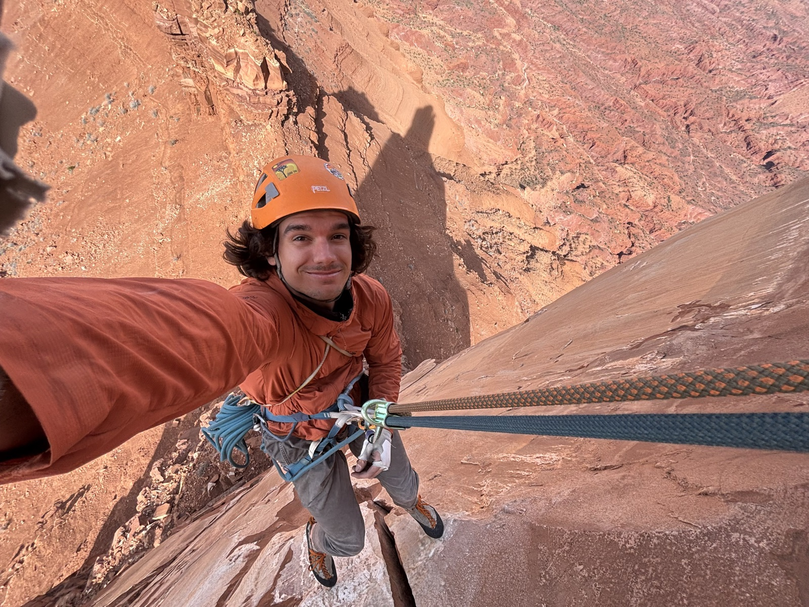

Route 1 of 4 · North Face
The Approach
About Erik — an easy warm-up pitch with good holds throughout.
5.6Guidebook
Grade
Grade
1
Trailhead 5.4
Software Engineer at Applied Materials, starting a new chapter after cutting his teeth in platform engineering. Specializes in Kubernetes — the kind of infrastructure work that's invisible when it's done right.
2
Slab Traverse 5.6
B.S. Computer Science, AI minor, Case Western Reserve University — graduated Cum Laude, December 2024. Certified Kubernetes Application Developer (CKAD).
3
The Real Summit off-route
Rock climber and hiker at heart — happiest on granite in Yosemite or desert sandstone in Joshua Tree. The job funds the trips; the trips keep the job in perspective.
- Variation — Weekends usually end up somewhere with a rope and a rack.


Rack
Kubernetes
Python
Go
TypeScript
Terraform
AWS